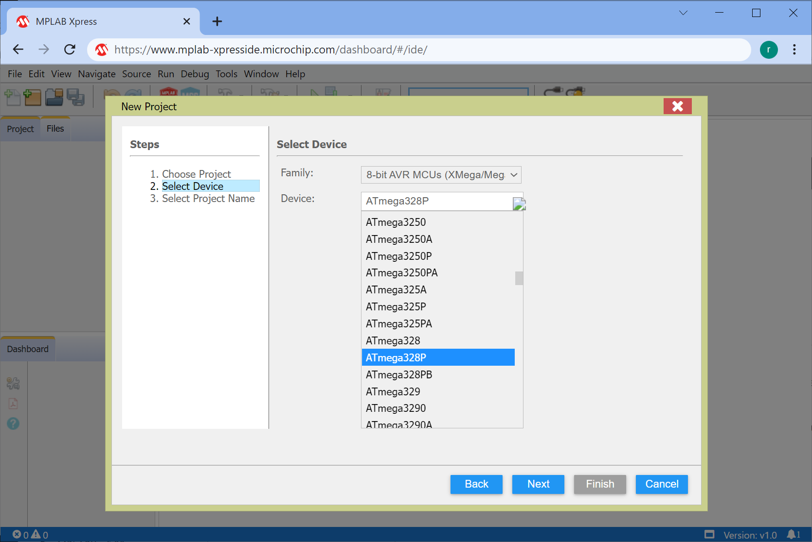

การใช้งานซอฟต์แวร์ MPLAB Xpress Cloud-based IDE สำหรับ AVR ในเบื้องต้น#
Keywords: Atmel/Microchip AVR MCUs, ATmega328P, MPLAB Xpress IDE
▷ MPLAB-X IDE vs. MPLAB Xpress IDE#
บทความนี้นำเสนอการทดลองใช้งานซอฟต์แวร์ MPLAB Xpress IDE v1.0 ร่วมกับ XC8 C Compiler v2.31 ของบริษัท Microchip ในเบื้องต้น และสาธิตการเขียนโปรแกรมภาษา C สำหรับไมโครคอนโทรลเลอร์ AVR MCU เช่น ATMega328P
ข้อดีของการใช้งาน MPLAB Xpress IDE คือ เป็นซอฟต์แวร์ในประเภท Cloud-based IDE สำหรับไมโครคอนโทรเลอร์ในตระกูลต่าง ๆ ของบริษัท Atmel / Microchip ที่มีให้เลือกทั้งตัวประมวลผลแบบ 8 บิต ไปจนถึง 32 บิต ผู้ใช้สามารถทำขั้นตอนดีบักโค้ดโดยใช้ตัวจำลองการทำงาน (Simulator) เช่น สำหรับ AVR, SAMC/SAMD และ PIC32/PIC32C เป็นต้น
หลังจากที่บริษัท Microchip ได้เข้าควบรวมกิจกรรมของบริษัท Atmel ในปีค.ศ. 2016 ก็ได้พัฒนาให้ซอฟต์แวร์ MPLAB-X IDE และ MPLAB Xpress IDE รองรับการใช้งานไมโครคอนโทรลเลอร์ของบริษัท Atmel สำหรับ AVR (8 บิต) และ SAM (32 บิต)
แม้ว่ายังจะมีการเปิดให้ดาวน์โหลดซอฟต์แวร์ Atmel Studio 7 IDE บนเว็บไซต์ของบริษัท และในช่วงต่อมาได้มีการปรับปรุงภายใต้ชื่อใหม่คือ Microchip Studio IDE แต่ผู้ใช้คงจะต้องพิจารณาเลือกเองว่า จะใช้ซอฟต์แวร์ใดเป็นหลักในการทำงานต่อไปอนาคตหากยังใช้ชิปไมโครคอนโทรลเลอร์ของ Atmel
จุดเด่นข้อหนึ่งของ MPLAB-X IDE คือ เป็นซอฟต์แวร์ประเภท Cross-platform มีให้เลือกใช้ได้สำหรับระบบปฏิบัติการ Windows, Linux และ Mac OS X ในขณะที่ Microchip Studio IDE จะใช้ได้เฉพาะกับระบบปฏิบัติการ Windows เท่านั้น
ซอฟต์แวร์ MPLAB Xpress IDE แม้ว่าจะสามารถใช้งานได้สะดวก ไม่ต้องติดตั้งโปรแกรมในเครื่องคอมพิวเตอร์ของผู้ใช้ แต่อาจกล่าวได้ว่า มีฟังก์ชันการทำงานน้อยกว่า MPLAB-X IDE โดยเฉพาะอย่างยิ่งในส่วนที่เกี่ยวข้องกับการดีบักโค้ด (Code Debugging) สำหรับรันโค้ดและตรวจสอบผลการทำงาน

รูป: MPLAB-X Desktop IDE (v6.0.0) สาธิตการเขียนโค้ดภาษา C สำหรับ AVR MCU
รูป: MPLAB Cloud-based Xpress IDE (v1.0) สาธิตการเขียนโค้ดภาษา C สำหรับ AVR MCU
▷ ขั้นตอนการใช้งาน#
เริ่มต้นด้วยการเข้าไปที่เว็บไซต์ตาม URL ข้างล่างนี้ ผู้ใช้จะต้องทำขั้นตอนลงทะเบียนก่อน แล้วจึง Login เข้าใช้งานได้ฟรี
https://www.mplab-xpresside.microchip.com/dashboard/
จากนั้นจะเข้าสู่หน้าต่างหลักของ MPLAB Xpress IDE (ในบทความ ได้ทดลองใช้เวอร์ชัน v1.0 / Release Date: June 23, 2021 และ v1.10 / Release Date: January 21, 2022) ผู้ใช้จะทำงานอยู่ภายใต้ Sandbox ของ Microchip Cloud ซึ่งมีระยะเวลาจำกัดในการจัดเก็บรักษาไฟล์ต่าง ๆ ของผู้ใช้ หรือถ้าผู้ใช้ต้องการสร้างโปรเจกต์ใหม่ โปรเจกต์เดิมที่มีอยู่จะถูกลบทิ้งไปจาก Sandbox (ข้อจำกัดของการใช้งานฟรี)
ขั้นตอนการทดลองใช้งานเบื้องต้น มีดังนี้
- สร้างโปรเจกต์ใหม่ พร้อมระบุชื่อโปรเจกต์และเลือกชิปไมโครคอนโทรลเลอร์ AVR
- สร้างไฟล์
main.cในโปรเจกต์ใหม่ สำหรับเขียนโค้ด - ลองเขียนโค้ดตามตัวอย่างและทำขั้นตอน Build เพื่อคอมไพล์โค้ด
- ทดลองการทำงานของโปรแกรมที่ได้ โดยการดีบักโค้ด (Source-Level Debugging) ด้วยตัวจำลองการทำงาน (Simulator)
- เลือกบรรทัดของโค้ดในไฟล์
main.cเพื่อใช้เป็นตำแหน่งของ Breakpoints เมื่อมีการทำคำสั่งมาถึงบรรทัดดังกล่าว จะมีการหยุดทำคำสั่งชั่วคราว หรือจะทำคำสั่งต่อไปก็ได้ (Continue) - ดูการเปลี่ยนแปลงที่เกิดขึ้นกับฮาร์ดแวร์ เช่น รีจิสเตอร์ต่าง ๆ ของซีพียู ตัวแปรที่มีอยู่ภายในโปรแกรม เป็นต้น
- ดาวน์โหลดไฟล์ .hex หรือนำออกไฟล์ของโปรเจกต์ (เป็นไฟล์ .zip) มายังเครื่องคอมพิวเตอร์ของผู้ใช้
▷ การสร้างโปรเจกต์ใหม่#
เมื่อเข้าสู่เว็บ MPLAB Xpress IDE แล้ว ให้เริ่มขั้นตอนการสร้างโปรเจกต์ใหม่ File > New Project..
รูป: เริ่มต้นขั้นตอนการสร้างโปรเจกต์ใหม่ File > New Project..
รูป: เลือกโปรเจกต์เป็น Microchip Embedded > Standalone Project
รูป: รายการไมโครคอนโทรลเลอร์จำแนกตามตระกูลที่มีให้เลือกใช้งาน
รูป: เลือกชิปไมโครคอนโทรลเลอร์ที่จะใช้งาน (Select Device) เป็น 8-bit AVR MCUs

รูป: เลือกชิป ATmega328p สำหรับโค้ดตัวอย่าง
รูป: ตั้งชื่อโปรเจกต์ และกดปุ่ม Finish
ข้อสังเกต: โปรเจกต์ที่ถูกสร้างขึ้นมาใน Microchip Sandbox Cloud จะถูกเก็บรักษาไว้โดยมีระยะเวลาจำกัด (1 สัปดาห์) นับจากวันที่มีการใช้งานครั้งล่าสุด
รูป: เมื่อสร้างโปรเจกต์ใหม่แล้ว ให้สร้างไฟล์ main.c ให้เป็นส่วนหนึ่งของโปรเจกต์
รูป: แสดงการตั้งค่าที่เกี่ยวข้องกับโปรเจกต์ (Project Settings)
ข้อสังเกต: สำหรับเวอร์ชัน v1.10 ระยะเวลาในการเก็บรักษาโปรเจกต์ใน Sandbox มีระยะเวลาเพียง 3 วัน หลังจากที่ผู้ใช้ไม่ได้ใช้งาน
"Development work in MPLAB Xpress is stored in a personal memory area known as a sandbox. If this area is not accessed for more than 3 days, it will be erased. Therefore, projects should be routinely saved to a Git repository, such as GitHub, or downloaded to a computer."
▷ ตัวอย่างโค้ดที่ 1#
ตัวอย่างแรกสาธิตการทำให้ขา PB5 ของ ATmega328P เป็นขาดิจิทัล-เอาต์พุต
และสลับสถานะลอจิก โดยมีการเว้นระยะเวลาประมาณ 100 มิลลิวินาที โดยใช้คำสั่ง _delay_ms(...)
รีจิสเตอร์ DDRB เกี่ยวข้องกับการกำหนดทิศทางอินพุตหรือเอาต์พุตที่ขาของพอร์ต B
ดังนั้นจะต้องกำหนดให้บิตในตำแหน่งที่ 5 ของรีจิสเตอร์ มีค่าเป็น 1 เพื่อใช้งานขา PB5 เป็นเอาต์พุต
(1 หมายถึง เอาต์พุต และ 0 หมายถึง อินพุต)
การกำหนดสถานะลอจิกสำหรับเอาต์พุตของพอร์ต B เกี่ยวข้องกับการทำงานของรีจิสเตอร์ PORTB
ดังนั้นการเซตหรือเคลียร์บิตที่ 5 ของรีจิสเตอร์ดังกล่าว จะเป็นตัวกำหนดสถานะลอจิก HIGH หรือ LOW ตามลำดับ
ให้ลองเขียนโค้ดตามตัวอย่างลงในไฟล์ main.c แล้วทำขั้นตอน Build Project / Build for Debugging เพื่อคอมไพล์โค้ด
#define F_CPU 16000000UL // CPU clock speed
// This header file is included when using the XC8 compiler.
#include <xc.h>
#include <util/delay.h> // for _delay_ms()
int main(void) {
DDRB |= _BV(DDB5); // set PB5 pin as output
while(1) {
PORTB |= _BV(PB5); // output high to PB5 pin
_delay_ms( 100 ); // delay for 100ms
PORTB &= ~_BV(PB5); // output low to PB5 pin
_delay_ms( 100 ); // delay for 100ms
}
return 0;
}
รูป: คอมไพล์โค้ดในโปรเจกต์
ในขั้นตอนการดีบักโค้ด ผู้ใช้สามารถเลือกหมายเลขบรรทัดโดยใช้เมาส์คลิกบรรทัดที่จะใช้เป็นตำแหน่งหยุดชั่วคราวเมื่อรันโปรแกรม และในรูปตัวอย่าง จะเห็นได้ว่า บรรทัดหมายเลข 10 และ 12 เป็นตำแหน่งของ Breakpoints
นอกจากนั้นผู้ใช้สามารถดูการเปลี่ยนแปลงค่าในรีจิสเตอร์ของไมโครคอนโทรลเลอร์ AVR ได้ในระหว่างการรันโปรแกรมเพื่อดีบักโค้ด เช่น ในหน้าต่าง Window > Target Memory Views > SFR สำหรับรายการรีจิสเตอร์ทั้งหมด หรือ Window > Debugging > Watches สำหรับการเลือกดูค่าของตัวแปรที่มีการประกาศใช้งานในโค้ด
รูป: กำหนดตำแหน่งที่เป็น Breakpoints ในโค้ด main.c และเริ่มขั้นตอนดีบัก (Debug > Debug Project)
จากเมนูคำสั่ง Window > Debugging เช่น ดูค่าของตัวแปรในโค้ด (Variables) ค่าของตัวแปรหรือรีจิสเตอร์ของซีพียูที่ได้เลือกมาสำหรับเฝ้าดูการเปลี่ยนแปลงค่า (Watches) และเลขบรรทัดในโค้ดที่ถูกกำหนดเป็นตำแหน่งหยุด (Breakpoints) เป็นต้น
รูป: ดูการเปลี่ยนแปลงของรีจิสเตอร์ที่เรียกว่า SFRs (Special Function Registers) ของ AVR
▷ ตัวอย่างโค้ดที่ 2#
โค้ดตัวอย่างนี้ สาธิตการเปิดใช้งานวงจร Timer1 ของ AVR และเปิดใช้งานอินเทอร์รัพท์สำหรับ
Timer1 Overflow ซึ่งจะมีการเรียกฟังก์ชัน ISR(TIMER1_OVF_vect) {...}
ซึ่งทำหน้าที่เป็น ISR (Interrupt Service Routine)
ให้ทำงานเมื่อเกิดเหตุการณ์ดังกล่าว และทำให้ขา GPIO หมายเลข PB5 ซึ่งใช้เป็นเอาต์พุต สลับสถานะลอจิกหนึ่งครั้ง
#define F_CPU 16000000UL // CPU clock speed
#include <xc.h>
#include <avr/io.h>
#include <avr/interrupt.h>
#define RELOAD_VALUE (65535-625)
ISR(TIMER1_OVF_vect) { // ISR for Timer1 overflow interrupt
TCNT1 = RELOAD_VALUE; // Load the specific value into TCNT1 register
PORTB ^= _BV(PB5); // Toggle the LED output at PB5 pin
}
void init_timer1() {
cli(); // Disable global interrupts
// Timer 1 normal operation, OC1A/OC1B disconnected
TCCR1A = TCCR1B = TCCR1C = 0;
TCNT1 = RELOAD_VALUE;
TCCR1B |= _BV(CS12); // Start Timer 1 with Fcpu/256
TIMSK1 |= _BV(TOIE1); // Enable Timer1 overflow interrupt
TIFR1 |= _BV(TOV1); // Clear Timer1 overflow interrupt flag
}
int main(void) {
DDRB |= _BV(DDB5); // Set output direction for LED on PB5 pin
init_timer1(); // Initialize Timer1
sei(); // Enable global interrupts
while(1) {
asm("nop"); // execute the nop instruction (inline assembly)
}
return 0;
}
รูป: สาธิตขั้นตอนการดีบักโค้ด มีการกำหนดตำแหน่งของ Breakpoint ที่บรรทัดแรกในฟังก์ชันที่ทำหน้าที่เป็น ISR และแสดงค่าในรีจิสเตอร์ของ AVR เช่น ตรวจสอบการเปลี่ยนแปลงค่าของรีจิสเตอร์
TCNT1 (หรือ TC1.TCNT1) ขนาด 16 บิต ของ Timer1
▷ กล่าวสรุป#
บทความนี้นำเสนอขั้นตอนการใช้งานซอฟต์แวร์ MPLAB Xpress Cloud IDE ของบริษัท Microchip เพื่อสาธิตการเขียนโปรแกรมภาษา C และตรวจสอบการทำงานของโค้ดหรือดีบักโดยใช้การจำลองการทำงาน สำหรับไมโครคอนโทรลเลอร์ AVR MCU ตระกูล ATmega
This work is licensed under a Creative Commons Attribution-ShareAlike 4.0 International License.
Created: 2022-01-21 | Last Updated: 2022-01-23